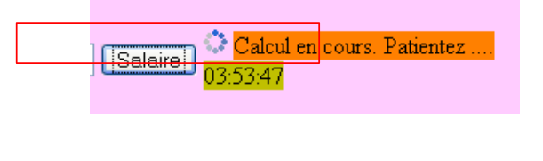

5. Die Anwendung „ “ [SimuPaie] – Version 2 – AJAX / ASP.NET
5.1. Introduction
Die Technologie AJAX (Asynchronous JavaScript and XML) vereint eine Reihe von Technologien:
- JavaScript: Eine in einem Browser angezeigte HTML-Seite kann JavaScript-Code enthalten. Dieser Code wird vom Browser ausgeführt, sofern der Nutzer die Ausführung von JavaScript in seinem Browser nicht deaktiviert hat. Diese Technologie gab es bereits seit den Anfängen des Internets und erfreut sich seit 2005 dank AJAX wieder zunehmender Beliebtheit.
- DOM: Document Object Model. Der in eine HTML-Seite eingebettete JavaScript-Code hat Zugriff auf das Dokument in Form eines Objektbaums, des DOM. Jedes Element des Dokuments (ein Eingabefeld, ein benanntes <div>-Tag, ein <select>-Tag usw.) wird durch einen Knoten des Baums dargestellt. Der JavaScript-Code kann das angezeigte Dokument ändern, indem er den DOM modifiziert. So kann er beispielsweise den in einem Eingabefeld angezeigten Text über den Knoten des DOM ändern, der dieses Feld repräsentiert.
AJAX nutzt JavaScript, um im Hintergrund Daten zwischen Browser und Server auszutauschen. Um auf ein Ereignis wie beispielsweise einen Klick auf eine Schaltfläche zu reagieren, wird vom Browser JavaScript-Code ausgeführt, um eine Anfrage an den Server zu senden. Diese Anfrage enthält Parameter, die dem Server mitteilen, was er tun soll. Der Server führt daraufhin die angeforderte Aktion aus. Als Antwort sendet er an den Browser einen Datenstrom HTTP, der Daten enthält, die eine teilweise Aktualisierung der aktuell angezeigten Seite ermöglichen. Diese erfolgt über den DOM des Dokuments und die Ausführung von im Dokument eingebettetem JavaScript-Code. Die vom Server zurückgesendeten Daten können in verschiedenen Formaten vorliegen: XML, HTML, JSON, unformatierter Text, ...
Der Vorteil dieser Technologie liegt in der teilweisen Aktualisierung des angezeigten Dokuments. Das bedeutet:
- weniger Daten, die zwischen Client und Server ausgetauscht werden, und somit eine schnellere Antwort
- eine flüssigere Bedienung der grafischen Benutzeroberfläche, da die Aktionen des Benutzers kein vollständiges Neuladen der Seite erfordern.
In einem Intranet mit schnellem Datenaustausch ermöglicht AJAX die Erstellung von Webanwendungen, deren Verhalten dem klassischer Windows-Oberflächen nahekommt. So lassen sich Ereignisse wie die Änderung der Auswahl in einer Liste verarbeiten und die Seite sofort teilweise aktualisieren, um diese Auswahländerung widerzuspiegeln. Die Tatsache, dass die Seite nicht vollständig neu geladen wird, vermittelt dem Benutzer das Gefühl der Flüssigkeit, das er von Windows-Anwendungen kennt. Bei Internetanwendungen, bei denen die Antwortzeiten lang sein können, bleibt die Technologie AJAX zwar einsetzbar, doch hängt das Gefühl der Flüssigkeit von der Netzwerkleistung ab.
Die größte Schwierigkeit bei AJAX ist die Sprache JavaScript. Da sie bereits in den Anfängen des Webs entwickelt wurde,
- erweist sie sich für die objektorientierte Programmierung als wenig geeignet. Sie ist beispielsweise keine typisierte Sprache. Der Typ der verarbeiteten Daten wird nicht deklariert. Damit ähnelt sie Sprachen wie Perl oder PHP.
- Es gibt keinen von allen Browsern akzeptierten Standard. Jeder Browser verfügt über eigene „JavaScript“-Erweiterungen, was dazu führt, dass ein für IE geschriebener JavaScript-Code möglicherweise nicht in Mozilla Firefox funktioniert und umgekehrt.
- Es ist schwer zu debuggen, da die Browser keine leistungsfähigen Tools zum Debuggen des von ihnen ausgeführten JavaScript-Codes anbieten.
All diese Probleme mit JavaScript führten dazu, dass es vor der Einführung von AJAX nur selten verwendet wurde. Sobald man den Nutzen der Ausführung von JavaScript-Code im Hintergrund erkannt hatte, um HTTP-Anfragen an den Webserver zu stellen und dessen Antwort zu nutzen, um mithilfe von DOM eine partielle Aktualisierung des angezeigten Dokuments durchzuführen, machten sich die Entwicklungsteams an die Arbeit und schlugen Frameworks vor, die es ermöglichen, AJAX zu nutzen, ohne dass der Entwickler JavaScript-Code schreiben muss. Zu diesem Zweck wurden JavaScript-Bibliotheken entwickelt, die sich an den Client-Browser anpassen können. Das Einfügen von JavaScript-Code in die an den Browser gesendete Seite erfolgt serverseitig, wobei die Techniken je nach verwendetem Framework variieren. Es gibt Ajax-Frameworks sowohl für Java, .NET, PHP, Ruby, ... als auch für AJAX, das in Visual Web Developer 2008 integriert ist.
5.2. Das Visual Web Developer-Projekt der Schicht [web-ui-ajax]
Die neue Version wird durch Duplizieren der vorherigen Version erstellt. Es wird lediglich die Seite [Default.aspx] geändert.
 |
- in [1]: Mit dem Windows-Explorer duplizieren wir den Projektordner [pam-v1-adonet] und benennen ihn in [pam-v2-adonet-ajax] um. Anschließend öffnet man mit Visual Web Developer das Projekt (Datei / Projekt öffnen) aus diesem neuen Ordner „[2]“
- in „[3]“ und benennen es um in
 |
- und ändern in den Eigenschaften des neuen Projekts den Namen der Assembly „[4]“ sowie den Standard-Namespace „[5]“.
Anschließend ersetzt man in den Dateien [Default.aspx, Default.aspx.cs, Default.aspx.designer.cs, Global.asax, Global.asax.cs] den Namespace [pam_v1] durch den Namespace [pam_v2], um die Übereinstimmung mit dem Standard-Namespace zu gewährleisten. Beispielsweise wird aus [Default.aspx] [6]:
<%@ Page Language="C#" AutoEventWireup="true" CodeBehind="Default.aspx.cs" Inherits="pam_v2._Default" %>
...
Die Seite [Default.aspx] wird wie folgt geändert:
 |
- Hinzufügen von Ajax-Komponenten zum Formular [Default.aspx] (siehe [2] oben).
- 2A: Die Komponente <asp:ScriptManager> ist für jedes Projekt AJAX erforderlich
- 2B: Die Komponente <asp:UpdatePanel> dient dazu, den Bereich abzugrenzen, der bei einer Benutzeraktion POST aktualisiert werden soll. Diese Komponente verhindert das vollständige Neuladen der Seite.
- 2C: Die Komponente <asp:UpdateProgress> dient dazu, während der Aktualisierung einen Text oder ein Bild anzuzeigen, um den Benutzer darauf hinzuweisen, wie unten dargestellt:
 |
- (Fortsetzung)
- 2D: Ein Typ Label mit dem Namen LabelHeureLoad, der die Uhrzeit anzeigt, zu der der Ereignis-Handler Load der Seite ausgeführt wird.
- 2E: ein Typ Label mit dem Namen LabelHeureSalaire, der die Uhrzeit anzeigt, zu der der Ereignis-Handler Click für die Schaltfläche [Salaire] ausgeführt wird. Wir möchten zeigen, dass Ajax beim Klicken auf die Schaltfläche [Salaire] nicht die gesamte Seite neu lädt. Dies wird durch den vorherigen Screenshot verdeutlicht, auf dem zwei unterschiedliche Uhrzeiten in den beiden Labels zu sehen sind.
Die vorangegangene Ajax-Anpassung des Formulars kann direkt im Quellcode von [Default.aspx] durch Hinzufügen von Ajax-Erweiterungs-Tags erfolgen:
...
<body style="text-align: left" bgcolor="#ffccff">
<h3>
Feuille de salaire
<asp:Label ID="LabelHeureLoad" runat="server" BackColor="#C0C000"></asp:Label></h3>
<hr />
<form id="form1" runat="server">
<asp:ScriptManager ID="ScriptManager1" runat="server" EnablePartialRendering="true" />
<asp:UpdatePanel runat="server" ID="UpdatePanelPam" UpdateMode="Conditional">
<ContentTemplate>
<div>
<table>
<tr>
...
<tr>
<td>
<asp:DropDownList ID="ComboBoxEmployes" runat="server">
</asp:DropDownList></td>
<td>
<asp:TextBox ID="TextBoxHeures" runat="server" EnableViewState="False">
</asp:TextBox></td>
<td>
<asp:TextBox ID="TextBoxJours" runat="server" EnableViewState="False">
</asp:TextBox></td>
<td>
<asp:Button ID="ButtonSalaire" runat="server" Text="Salaire" CausesValidation="False" /></td>
<td> <asp:UpdateProgress ID="UpdateProgress1" runat="server">
<ProgressTemplate>
<img src="images/indicator.gif" />
<asp:Label ID="Label5" runat="server" BackColor="#FF8000" EnableViewState="False"
Text="Calcul en cours. Patientez ...."></asp:Label>
</ProgressTemplate>
</asp:UpdateProgress>
<asp:Label ID="LabelHeureSalaire" runat="server" BackColor="#C0C000"></asp:Label></td>
</tr>
<tr>
...
</tr>
</table>
</div>
<br />
....
<table>
<tr>
<td>
Salaire net à payer :
</td>
<td align="center" bgcolor="#C0C000" height="20px">
<asp:Label ID="LabelSN" runat="server" EnableViewState="False"></asp:Label></td>
</tr>
</table>
</asp:Panel>
</ContentTemplate>
</asp:UpdatePanel>
</form>
</body>
</html>
- Zeile 8: Jedes Ajax-Formular muss das Tag <asp:ScriptManager> enthalten. Dieses Tag ermöglicht die Verwendung der neuen Ajax-Komponenten:
 |
- Das Tag <asp:ScriptManager> kann durch einen Doppelklick auf die oben genannte Komponente [ScriptManager] aufgerufen werden. Es ist darauf zu achten, dass dieses Tag im <form>-Tag des Quellcodes enthalten ist. Das Attribut [EnablePartialRendering= "true "] in Zeile 8 fehlt standardmäßig. Da der Wert „true“ der Standardwert ist, ist es nicht zwingend erforderlich.
- Zeile 9: Mit dem Tag <asp:UpdatePanel> lassen sich die Bereiche der Seite abgrenzen, die bei einer teilweisen Aktualisierung der Seite aktualisiert werden sollen. Das Attribut [UpdateMode="Conditional"] gibt an, dass der Bereich nur bei einem AJAX-Ereignis einer Komponente des Bereichs aktualisiert werden soll. Der andere Wert ist [UpdateMode="Always"] und stellt den Standardwert dar. Mit diesem Attribut wird das Feld UpdatePanel systematisch aktualisiert, auch wenn das aufgetretene Ajax-Ereignis von einer Komponente eines anderen Feldes UpdatePanel stammt. Im Allgemeinen ist dieses Verhalten nicht erwünscht.
Das Tag <asp:UpdatePanel> unterstützt zwei untergeordnete Tags: <ContentTemplate> und <Triggers>.
- Die Tags <asp:ContentTemplate> in den Zeilen 10 und 53 begrenzen den Bereich der Seite, der teilweise aktualisiert werden soll.
- Zeilen 27–33: Eine Ajax-Komponente <asp:UpdateProgress>, mit der während der gesamten Dauer der Seitenaktualisierung ein Text angezeigt werden kann. Beispielsweise löst ein Klick auf die Schaltfläche [Salaire] im Hintergrund einen POST aus. Der Browser zeigt dann keine Sanduhr an, und der Benutzer könnte daher versucht sein, das Formular weiter zu verwenden. Mit dem Tag <asp:UpdateProgress> lässt sich ein Text anzeigen, der darauf hinweist, dass gerade eine Aktualisierung der Seite stattfindet. Es kann auch ein Bild angezeigt werden. Hier werden ein animiertes Bild (Zeile 29) sowie ein Text (Zeilen 30–31) angezeigt:
 |
- Zeilen 28–32: Das Tag <ProgressTemplate> begrenzt den Inhalt, der während der gesamten Dauer der Aktualisierung des Bereichs UpdatePanel angezeigt wird, in dem sich das Tag UpdateProgress befindet.
- Zeilen 29–31: Das animierte Bild und der Text, die während der Aktualisierung des Bereichs UpdatePanel angezeigt werden.
- Zeile 5: Das Label LabelHeureLoad wird außerhalb des Ajax-Bereichs platziert
- Zeile 34: Das Label LabelHeureSalaire wird in den Ajax-Bereich eingefügt
Der Code der Seite [Default.aspx.cs] ändert sich wie folgt:
protected void Page_Load(object sender, System.EventArgs e)
{
// Zeitpunkt jedes Seitenladevorgangs
LabelHeureLoad.Text = DateTime.Now.ToString("hh:mm:ss");
// Bearbeitung der ersten Anfrage
if (!IsPostBack)
{
....
}
- Zeile 4: Aktualisierung des Zeitstempels für das Laden der Seite
protected void ButtonSalaire_Click(object sender, System.EventArgs e)
{
// Zeitpunkt der Gehaltsberechnung
LabelHeureSalaire.Text = DateTime.Now.ToString("hh:mm:ss");
// Daten werden überprüft
....
}
- Zeile 4: Aktualisierung des Zeitpunkts der Gehaltsberechnung
Um die Seite [Default.aspx] fertigzustellen, müssen wir das animierte Bild einbinden, auf das in Zeile 4 des folgenden Quellcodes der Seite verwiesen wird:
<td>
<asp:UpdateProgress ID="UpdateProgress1" runat="server">
<ProgressTemplate>
<img src="images/indicator.gif" />
<asp:Label ID="Label5" runat="server" BackColor="#FF8000" EnableViewState="False"
Text="Calcul en cours. Patientez ...."></asp:Label>
</ProgressTemplate>
</asp:UpdateProgress>
<asp:Label ID="LabelHeureSalaire" runat="server" BackColor="#C0C000"></asp:Label>
</td>
Mit dem Windows-Explorer fügen wir die Datei [images/indicator.gif] zum Projektordner [1] hinzu:
 |
- In [2] lassen wir alle Projektdateien anzeigen
- in [3], den Ordner [images]
- in [4] wird der Ordner [images] in das Projekt aufgenommen
 |
- in [5] wurde der Ordner [images] in das Projekt aufgenommen
- in [6] werden die Dateien ausgeblendet, die nicht Teil des Projekts sind
- in [7], das neue Projekt
5.3. Tests der Ajax-Lösung
Wenn man die Ausführung des Projekts (CTRL-F5) anfordert, erhält man die folgende Seite:
 |
- in [1], die Ladezeit der Seite
Führen Sie Tests durch und stellen Sie sicher, dass die Schaltfläche [Salaire] nicht zu einem vollständigen Neuladen der Seite führt. Sie können dies anhand der angezeigten Zeit für die Verarbeitung des Klicks auf die Schaltfläche [Salaire] [2] erkennen, die nicht mit der Zeit des ursprünglichen Ladens der Seite [3] übereinstimmt:
 |
Wiederholen Sie die Tests, indem Sie die Eigenschaft EnablePartialRendering der Komponente ScriptManager1 auf False setzen:
 |
Stellen Sie fest, dass sich die Seite nun wie eine Seite ohne AJAX verhält. Beim Klicken auf die Schaltfläche [Salaire] wird die Seite vollständig neu geladen. Wiederholen Sie die Tests mit einem anderen Browser. Der Cross-Browser-Test soll zeigen, dass das von den Serverkomponenten ASP / AJAX generierte JavaScript von den verschiedenen Browsern korrekt interpretiert wird.
Abschließend wollen wir die Rolle des Tags <asp:UpdateProgress> hervorheben. Fügen wir im Code der Prozedur [ButtonSalaire_Click] von [Default.aspx.cs] eine Anweisung hinzu, die die Prozedur für 3 Sekunden anhält:
using System.Threading;
...
protected void ButtonSalaire_Click(object sender, System.EventArgs e)
{
// Zeitpunkt der Gehaltsberechnung
LabelHeureSalaire.Text = DateTime.Now.ToString("hh:mm:ss");
// Wartezeit
Thread.Sleep(3000);
// Daten werden überprüft
....
}
Zeile 8 lässt den Thread, der die Prozedur [ButtonSalaire_Click] ausführt, 5 Sekunden lang warten. Nachdem dies erledigt ist, führen wir die Tests erneut durch (nachdem wir das Attribut EnablePartialRendering der Komponente ScriptManager1 wieder auf „True“ gesetzt haben). Diesmal sehen wir während der Gehaltsberechnung sowohl den Text von [UpdateProgress] als auch das animierte Bild:
 |
5.4. Conclusion
Die vorangegangene Untersuchung hat gezeigt, dass es möglich ist, bestehende ASP.NET-Anwendungen mit Ajax zu erweitern. Die Erweiterungen AJAX von ASP.NET gehen über das eben Dargestellte hinaus. Der Leser wird gebeten, die Website [http://ajax.asp.net] zu besuchen.